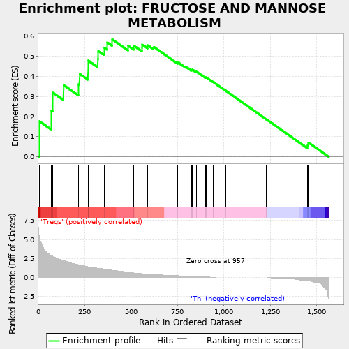
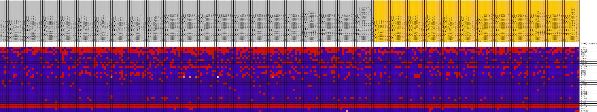
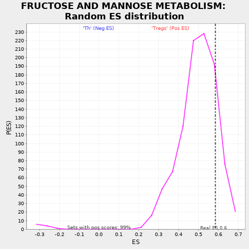

| | | Dataset | expr.pheno.cls#Tregs_versus_Th |
| Phenotype | pheno.cls#Tregs_versus_Th |
| Upregulated in class | Tregs |
| GeneSet | FRUCTOSE AND MANNOSE METABOLISM |
| Enrichment Score (ES) | 0.58441716 |
| Normalized Enrichment Score (NES) | 1.1704654 |
| Nominal p-value | 0.16885743 |
| FDR q-value | 1.0 |
| FWER p-Value | 1.0 |
Table: GSEA Results Summary

Fig 1: Enrichment plot: FRUCTOSE AND MANNOSE METABOLISM
Profile of the Running ES Score & Positions of GeneSet Members on the Rank Ordered List
| PROBE | DESCRIPTION
(from dataset) | GENE SYMBOL | GENE_TITLE | RANK IN GENE LIST | RANK METRIC SCORE | RUNNING ES | CORE ENRICHMENT | | 1 | TPI1 | na | | | 6 | 5.394 | 0.1772 | Yes |
| 2 | PFKFB3 | na | | | 70 | 2.843 | 0.2316 | Yes |
| 3 | ALDOA | na | | | 79 | 2.764 | 0.3192 | Yes |
| 4 | HK1 | na | | | 136 | 2.219 | 0.3572 | Yes |
| 5 | GMPPA | na | | | 217 | 1.654 | 0.3606 | Yes |
| 6 | TSTA3 | na | | | 222 | 1.638 | 0.4130 | Yes |
| 7 | PMM1 | na | | | 268 | 1.419 | 0.4313 | Yes |
| 8 | ENOSF1 | na | | | 269 | 1.414 | 0.4788 | Yes |
| 9 | GMDS | na | | | 320 | 1.221 | 0.4872 | Yes |
| 10 | AKR1B10 | na | | | 323 | 1.205 | 0.5264 | Yes |
| 11 | ALDOC | na | | | 355 | 1.107 | 0.5434 | Yes |
| 12 | PMM2 | na | | | 372 | 1.057 | 0.5684 | Yes |
| 13 | PFKL | na | | | 398 | 0.961 | 0.5844 | Yes |
| 14 | PFKP | na | | | 484 | 0.691 | 0.5523 | No |
| 15 | HK2 | na | | | 514 | 0.595 | 0.5533 | No |
| 16 | MPI | na | | | 559 | 0.497 | 0.5413 | No |
| 17 | FUK | na | | | 560 | 0.497 | 0.5580 | No |
| 18 | GMPPB | na | | | 589 | 0.446 | 0.5548 | No |
| 19 | PFKM | na | | | 621 | 0.383 | 0.5474 | No |
| 20 | HKDC1 | na | | | 752 | 0.227 | 0.4704 | No |
| 21 | KHK | na | | | 795 | 0.135 | 0.4475 | No |
| 22 | PFKFB1 | na | | | 825 | 0.114 | 0.4325 | No |
| 23 | PFKFB4 | na | | | 829 | 0.114 | 0.4343 | No |
| 24 | HK3 | na | | | 851 | 0.114 | 0.4245 | No |
| 25 | AKR1B1 | na | | | 902 | 0.068 | 0.3942 | No |
| 26 | FPGT | na | | | 904 | 0.063 | 0.3956 | No |
| 27 | FBP1 | na | | | 942 | 0.021 | 0.3722 | No |
| 28 | FBP2 | na | | | 1008 | 0.000 | 0.3299 | No |
| 29 | ALDOB | na | | | 1229 | 0.000 | 0.1866 | No |
| 30 | SORD | na | | | 1450 | -0.442 | 0.0581 | No |
| 31 | PFKFB2 | na | | | 1455 | -0.482 | 0.0717 | No |
Table: GSEA details [plain text format]

Fig 2: FRUCTOSE AND MANNOSE METABOLISM
Blue-Pink O' Gram in the Space of the Analyzed GeneSet

Fig 3: FRUCTOSE AND MANNOSE METABOLISM: Random ES distribution
Gene set null distribution of ES for FRUCTOSE AND MANNOSE METABOLISM